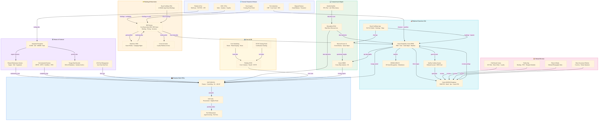

Cruise Integrated System Landscape
Full application landscape across all 12 operational domains — Royal Caribbean International reference · Updated 2026-03-28 22:00
🗺️
Enterprise Architecture Diagram

Click diagram to open fullscreen | Scroll to zoom | Drag to pan
📋
Architecture Notes
The Royal Caribbean International system landscape maps every application to its operational domain. Oracle Hospitality Cruise SPMS sits at the shipboard hub, while the proprietary RES reservation system anchors shore-side booking. 14 major platforms span from external booking channels and port authorities through guest operations, onboard revenue, marine management, environmental compliance, and enterprise back-office — all interconnected via Starlink satellite linking ship and shore in near-real-time.
- RES (proprietary, 9M+ lines RPG) is the core reservation system — all bookings flow through it
- Oracle SPMS is the shipboard hub equivalent of an airport AODB — all ship operations reference it
- Starlink connectivity (98% of fleet, sub-100ms latency) enables near-real-time ship-shore data sync
- SAP S/4HANA handles all shore-side finance; voyage accounting journals post from SPMS nightly
- IDEMIA MFACE facial recognition deployed at US homeports for sub-8-second debarkation